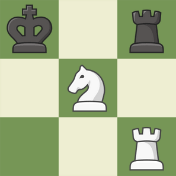

(Przycisk poniżej wymagany jest do załadowania paru dodatkowych rzeczy, poprostu go kliknij!)
POŁĄCZONO Z SIECIĄ BOREAS RESEARCH. Copyright 2001-2025 All rights reserved.
Ze względu na ostatnie problemy z niechcianym dostępem do plików, każdy odwiedzający musi się zalogować!
Login:
Hasło:
Wczytywanie...
Dostęp techniczny: Kliknij złącz gdy część wymaganego szyfru pojawi się na ekranie. Zdobądź cały szyfr, aby otrzymać dane konta technicznego.
4X1F
K001
79J5
01HZ
34F2
7A08
0ZV7
N0WR
BLJ6
Szyfr:
N0WR
01HZ
7A08
K001
POŁĄCZONO Z SIECIĄ BOREAS RESEARCH. Copyright 2001-2025 All rights reserved.
Dziękujemy za przystąpienie. Przeprowadzimy teraz serię testów.
Test 1: Zrekreuj melodię... Wciśnij 5 razy przyciski w porawnej sekwencji, następnie zatwierdź losowym przyciskiem.
BOREAS SURVEY PROGRAM
Ta część sprawdzeń obejmuje krótki quiz. Prosimy o jego szczere wypełnienie.
1. Autobus linii 14 z ul. Kościuszki do Pl. Rapackiego dojedzie w około...
5 minutod 15 do 25 minut jako iż Aleja Solidarności zawsze jest zakorkowana.10 minut2. Czy włożenie do aktywnego gniazdka widelca to dobry pomysł?
TakNieWspaniały3. Mgła nadchodzi.
Mgła nadchodzi.Mgła nadchodzi.Mgła nadchodzi.Twoje wybory są anonimowe (chyba, w sumie to nie wiem), ale użyjemy ich do personalizacji.
POŁĄCZONO Z SIECIĄ BOREAS RESEARCH. Copyright 2001-2025 All rights reserved.
Jako ostatni test, poprostu wybierz z menu pole do którego powinna przesunąć się czarna wieża, aby nie móc być zbitą.
BOREAS RESEARCH
Dziękujemy za wypełnienie strony. Widzimy się w przyszłości pod kontaktem firmowym.